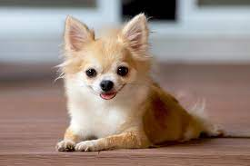
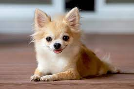

Welcome to Our Animal Shelter!
The animal shelter was founded just a few years ago by animal lovers who saw the need for a safe and loving home for abandoned and homeless pets in our community. As a small organization, we started with a handful of dedicated volunteers and one building to house and care for a few dozen animals. Our commitment to improving the lives of animals and promoting human-animal relationships drove us from the beginning.
After word spread about our mission and dedication, we began to grow. We expanded our services and reach to help more animals in need as more volunteers joined our team. New buildings and programs were built and our small shelter started making a big difference.
With determination and hard work we managed today to be an important and useful member of society and help several hundreds of animal lives every year.We are always looking for new ways to make a difference and to reach even more animals in need. We are grateful for the support of our donors, volunteers and community partners, who make our work possible and help us to move forward in our mission.
We are dedicated to rescuing and rehoming abandoned and homeless pets. We provide a safe and loving environment for them until they find their forever homes.
Our team consists of excellent and talented people, who strive to help the lives of countless animals.We also offer a range of services to the community, including adoptions, spay/neuter surgeries and microchipping.
We really care about animals and want them to be happy and healthy. If you adopt a pet, volunteer, or donate, you can help us achieve our goal. Thank you for your support!
Adopt a Pet
Thank you for considering adoption! By adopting a pet from our shelter, you are giving a second chance to a deserving animal and providing them with a loving forever home. All of our animals are spayed/neutered, microchipped and up to date on vaccinations before they go home with their new families.
Adoption Process
Adopting a pet from our shelter is easy! Just follow these steps:
- Browse our available pets and decide which one you would like to adopt
- Contact us to set up a meet and greet with the pet
- Fill out an adoption application and bring it with you to the meet and greet
- If the meet and greet goes well and your application is approved, you can take your new pet home with you that day!
Please note that we do require a home visit as part of our adoption process to ensure that the pet is going to a suitable home. We also require a minimum donation to help cover the cost of care for the animal.
Meet Our Dogs

 

Apply for adoption!
If you want to adopt one or more of our dogs, you can contact us at here.
Volunteer
Join our team of dedicated volunteers and make a difference in the lives of our animals. We have a variety of opportunities available, including socializing with the animals, cleaning cages, grooming pets and helping with events such as adoption days and fundraising events.
Our volunteers typically work about 2 hours per week, but we welcome volunteers who are able to allocate some more time. To get started, please fill out our online application form or contact us to learn more about volunteering opportunities. Thank you for considering supporting our mission as a volunteer!
Upcoming Volunteer Events
| Date | Event | Location |
|---|---|---|
| February 5 | Adoption Event | Thessaloniki |
| February 23 | Fundraising Event | Our Shelter |
| March 3 | Adoption Event | Thessaloniki |
| March 20 | Fundraising Event | Our Shelter |
Why Volunteer at Our Shelter?
- Make a difference in the lives of animals
- Gain valuable skills and experience
- Meet new people and make new friends
- Feel a sense of accomplishment and satisfaction
Current Volunteer Testimonials
"Volunteering at the animal shelter was a fulfilling and enriching experience. The staff and other volunteers are passionate and welcoming and the animals received a lot of love and care. The volunteer experience allowed the writer to learn new things and make new friends. They would highly recommend volunteering at the animal shelter to anyone"
"I started volunteering at the animal shelter because I wanted to do something meaningful . It has been an amazing experience and I have learned so much about caring for animals. The staff and other volunteers are all so dedicated and passionate and it's contagious! I feel grateful to be able to contribute in a small way to the important work they do"
Volunteer Jobs
Our volunteers are an huge part of our team and play a vital role in the care and well-being of the animals at our shelter. Some of the tasks and responsibilities that volunteers are involved in are the following :
- Socializing with the animals: Spending time with the animals, playing with them and providing them with love and attention is an important part of their care and helps to improve their mental and emotional health. Volunteers may also be involved in basic training and obedience exercises with the animals.
- Cleaning cages and kennels: Maintaining a clean and healthy environment for the animals is essential to their well-being. Volunteers may be responsible for cleaning and disinfecting cages, kennels and other areas of the shelter, as well as changing bedding and providing fresh water and food for the animals.
- Grooming pets: Many of the animals at our shelter have long fur or require regular grooming to maintain their health and appearance. Volunteers may be responsible for brushing, bathing and drying the animals, as well as trimming nails and cleaning ears.
- Helping with events: Our shelter hosts a variety of events throughout the year, including adoption days, fundraising events and community outreach events. Volunteers may be asked to help with set-up, registration and other tasks to ensure the smooth running of these events.
Apply for volunteer
If you want to become a volunteer, apply here.
Contact Us
Have a question or want to get involved?
Contact us at:
- Phone ☎: 2310-156-156
- Email ✉: animalshelterthes@gmail.com
Visit us at:
Egnatia Street 140Thessaloniki, Greece